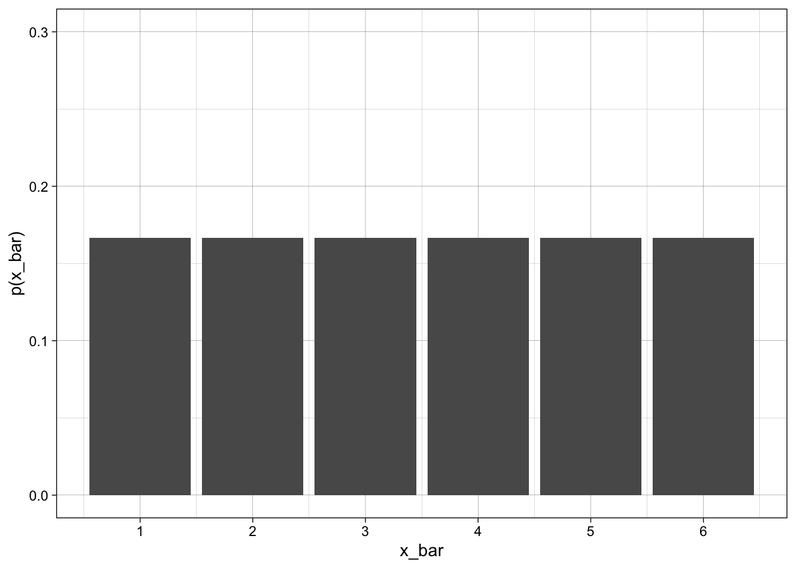
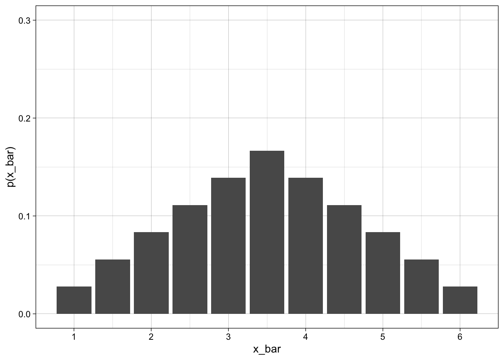
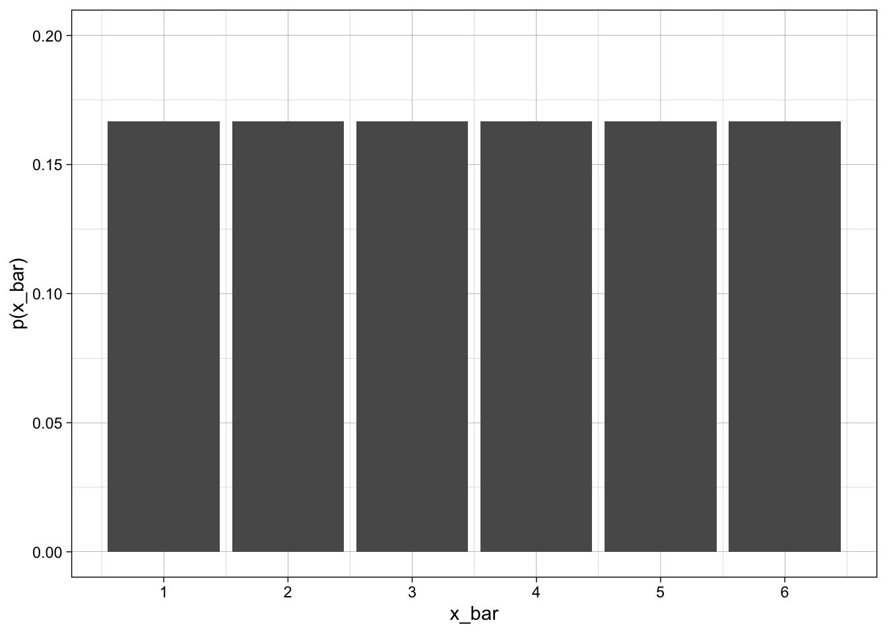
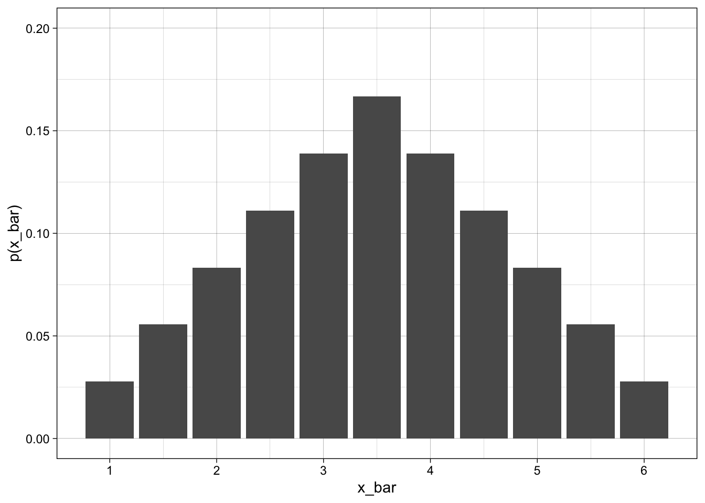
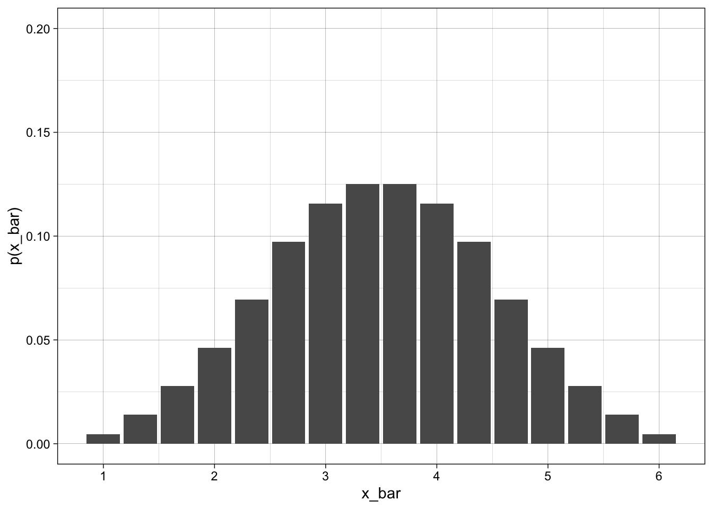
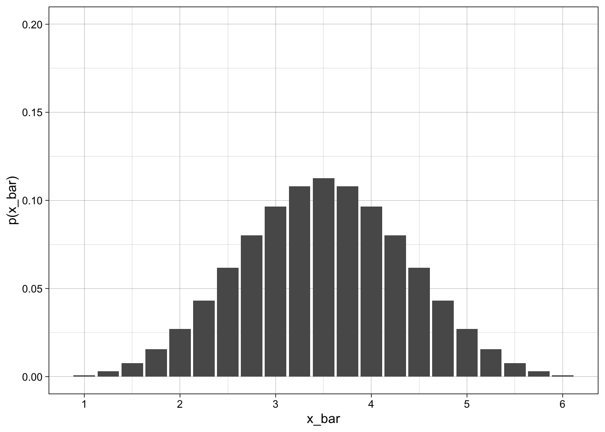
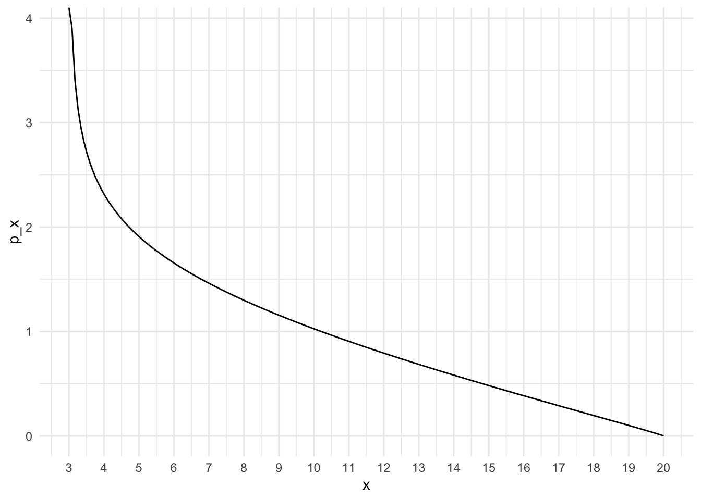
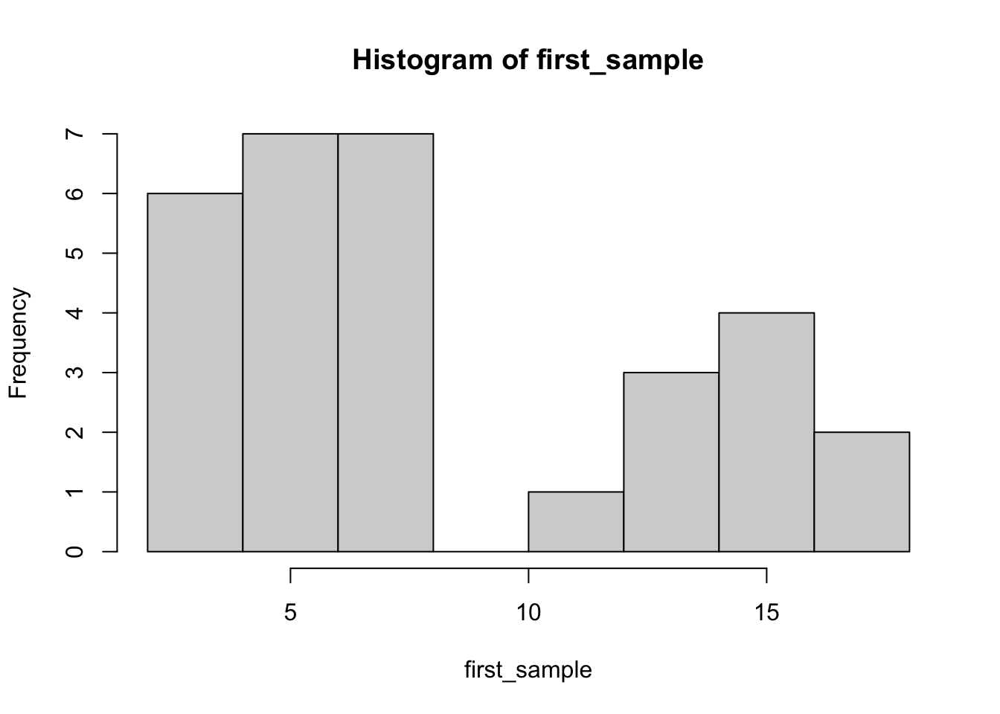
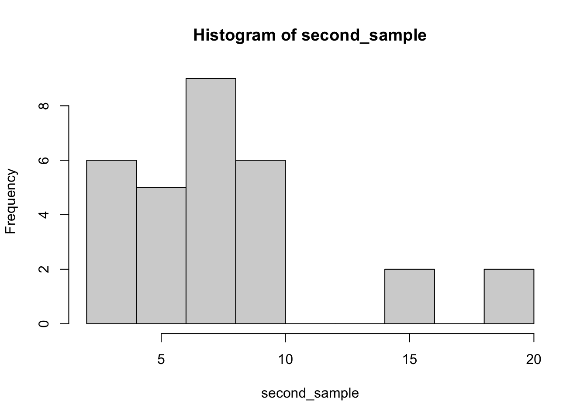
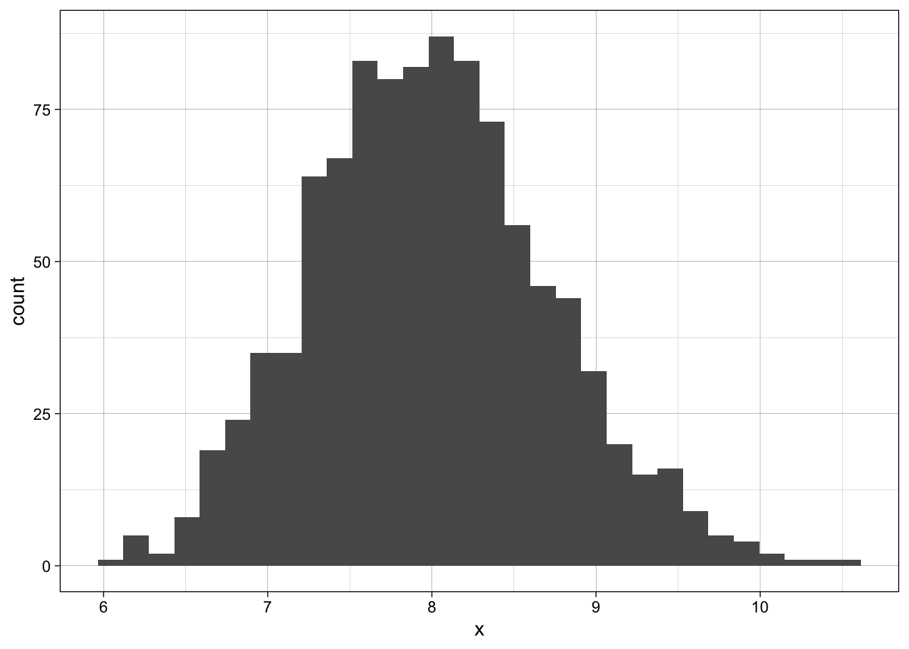

Lecture 17/18
The Central Limit Theorem and the Sample Mean
Section 7.2 Statistics and Sampling Distributions (Abridged)
The sampling distribution of a statistic is the probability distribution for the possible values of the statistic that result when random samples of size n are repeatedly drawn from the population.
Example:
Let’s say each one of you goes out and finds 25 people and find their average height. That would give us 30 estimates the average height of 25 people. We can then create a histogram of those 30 estimates and describe that probability distribution.
For example, let say the heights of students are normally distributed with \(\mu = 5\) and \(\sigma = 1\). Can you make any guesses about what the distribution of the averages of 25 students would look like?
Section 7.3 The Central Limit Theorem and the Sample Mean
The Central Limit Theorem
The sums and means of a random samples of measurements drawn from a population tend to have an approximately normal distribution.
Let’s roll one die and take the average of the sum of dots on the face (very simple for one die)
Now let’s now roll two dice and average the two values we see:
First Die | ||||||
|---|---|---|---|---|---|---|
Second Die | 1 | 2 | 3 | 4 | 5 | 6 |
1 | 2 | 3 | 4 | 5 | 6 | 7 |
2 | 3 | 4 | 5 | 6 | 7 | 8 |
3 | 4 | 5 | 6 | 7 | 8 | 9 |
4 | 5 | 6 | 7 | 8 | 9 | 10 |
5 | 6 | 7 | 8 | 9 | 10 | 11 |
6 | 7 | 8 | 9 | 10 | 11 | 12 |
- We can use this to come up with the averages - divide each number in the above table by 2.
xbar | N | Freq |
|---|---|---|
1.0 | 1 | 0.028 |
1.5 | 2 | 0.056 |
2.0 | 3 | 0.083 |
2.5 | 4 | 0.111 |
3.0 | 5 | 0.139 |
3.5 | 6 | 0.167 |
4.0 | 5 | 0.139 |
4.5 | 4 | 0.111 |
5.0 | 3 | 0.083 |
5.5 | 2 | 0.056 |
6.0 | 1 | 0.028 |

The above is looking mound shaped - even though we started with a uniform distribution.
Lets run this for 3 and 4 dice as well and compare all four graphs. What can we say about the \(\mu\) and \(\sigma\)




CLT Definition
If random samples of n observations are drawn from a nonnormal population with finite mean \(\mu\) and standard deviation \(\sigma\), then, when \(n\) is large, the sampling distribution of the sample mean \(\bar x\) is approximately normally distributed with mean = \(\mu\) and standard deviation = \(\frac{\sigma}{\sqrt{n}}\)
The approximation becomes more accurate n becomes large.
The Central Limit Theorem can be restated to the sum of the sample measurements, which, as n becomes large, also has an approximately normal distribution with mean \(n \mu\) and standard deviation \(\sigma \sqrt{n}\)
How large does n need to be?
- If the sampled population is normal, then the sampling distribution of \(\bar x\) will also be normal.
- If the sampled population is approximately symmetric, then \(n \ge 3\)
- If the sampled population is skewed then \(n \ge 30\)
Sampling Distribution of the Sample Mean
The goal is to estimate the population mean \(\mu\)
How do we do that using our sample? Should we estimate it with the sample mean (\(\bar x\)), maybe the median?
Three main idea about choosing an estimator:
- Is it hard to calculate?
- Does it produce estimates that are generally too high or too low?
- Is it more or less variable than other possible estimators?
The sample mean is best in this case. It’s easy to that of course it should be sample mean - however, think about our estimate of the population variance from the sample variance - the sample variance has a different formula.
The Sampling Distributino of the Sample Mean, \(\bar x\)
If a random sample of n measurements is selected from a population with mean \(\mu\) and standard deviation \(\sigma\), the sampling distribution of the sample mean \(\bar x\) will have mean \(\mu\) and standard deviation \(\frac{\sigma}{\sqrt{n}}\).
- If the population is normal, then the sampling distribution of \(\bar x\) is normal no matter the size of \(n\).
- If the population is nonnormal, then this works for \(n \ge 30\)
Standard Error of the Sample Mean
The standard deviation of a statistic used to estimate a population parameter is also called the standard error of the estimator. The standard error of \(\bar x\) is \(\frac{\sigma}{\sqrt{n}}\)
In order to calculate probabilities for the Sample Mean - we can convert to a z-score like we have done before - using the standard error for the denominator:
\[ z = \frac{\bar x - \mu}{\sigma/\sqrt{n}} \]
Note that in this case we are given the population standard deviation. If we weren’t, we could calculate it from the sample and plug in \(s\) of \(\sigma\) above.
Example 7.4
The duration of Alzheimer’s disease from the time symptoms first appear until death ranges from 3 to 20 years; the average is 8 years with a standard deviation of 4 years. The administrator selects the medical records of 30 deceased Alzheimer’s patients from the medical center’s database and records the average duration. Find the approximate probabilities for these events:
- The average duration is less than 7 years.
- The average duration exceeds 7 years.
- The average duration lies within 1 year of the population mean (\(\mu = 8\))
Quick aside - what’s happening?
Here is a probability distribution that has a mean of 8 and standard deviation of 4 - and it runs from 3 to 20.

I can then pick 30 people - this is what the researcher does.

[1] 3.1 3.2 3.7 3.8 3.9 4.0 4.0 4.3 4.6 4.6 5.0 5.0 5.3 6.0 6.1
[16] 6.8 7.0 7.0 7.5 7.7 10.5 12.1 12.1 12.8 14.8 14.9 15.0 15.7 16.6 17.3Mean:
[1] 8.147485The questions are asking about that first sample - we chose one group of 30 - but a different group of 30 may have a different mean.
Here is another group:

[1] 3.4 3.4 3.5 3.5 3.7 3.9 4.4 4.5 5.0 5.2 6.0 6.2 6.3 6.7 7.1
[16] 7.3 7.4 7.5 7.9 8.0 8.1 8.2 8.3 8.3 8.5 10.0 14.0 15.1 19.2 19.3Mean:
[1] 7.661056Now let’s take 1000 samples of 30 and plot the histogram of the means.
`stat_bin()` using `bins = 30`. Pick better value with `binwidth`.
This is the curve we are interested in using to answer the questions below. It has approximately \(\mu = 8\) and \(SE = \sigma/\sqrt{n} = 4/\sqrt{30} = .73\)
- The average duration is less than 7 years.
.0853
The average duration exceeds 7 years.
\(1 - .0853 = .9147\)The average duration lies within 1 year of the population mean (\(\mu = 8\))
.8294
Example 7.5
To determine whether a bottling machine is working satisfactorily, a production line manager randomly samples ten 12-ounce bottles every hour and measures the amount of beverage in each bottle.
If records show that the amount of fill per bottle is normally distributed, with a standard deviation of .2 ounce, and if the bottling machine is set to produce a mean fill per bottle of 12.1 ounces, what is the probability that the sample mean \(\bar x\) of the 10 test bottles is less than 12 ounces?
\(P( \bar x \lt 12) = P(z \lt -1.58) = .0571\)
What’s a possible issue with this strategy? What happens if we run this test 100 times - is it possible we get a false positive?
One way to deal with this is to take a second larger sample if
Homework
[1] "7.3.1, 7.3.3, 7.3.15, 7.3.18, 7.3.22, 7.3.32"Answers: Section 7.3